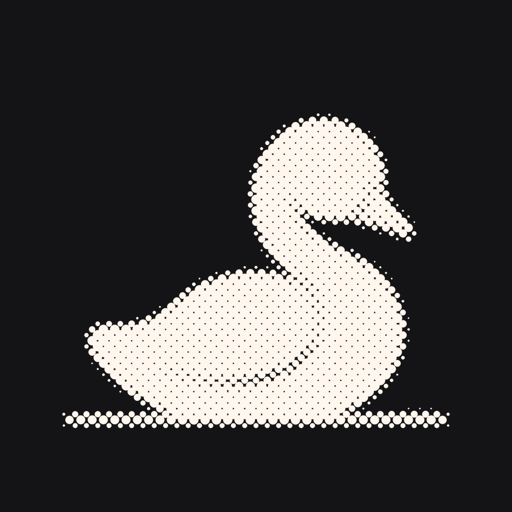

Hello
Free, for good
Idyll.
Your social apps without the feeds. Messages, friends, search and posting all stay.
No account. Idyll collects nothing.
C, Night, is the master. Light mode mirrors it screen for screen in the site's paper and ink. The app follows the phone's appearance setting. Riffs on the first-run sheet and the electric blue accent follow below.
Hello
Your social apps without the feeds. Messages, friends, search and posting all stay.
No account. Idyll collects nothing.
Pick your apps
Pick any. You can change this later.
First clean app, live
That's Idyll, optional chapters
Everything below is optional. Do any of it now, later, or never.
Time in the real apps
A daily allowance for the real Instagram, TikTok and the rest.
Sleep
The real apps rest at night.
Focus
One tap pauses them while you work.
Safari
Tidy the same sites in Safari.
Send the real apps here
Open Instagram, land in Idyll.
Home
Today in the real apps
18 of 30 min
Screen Time's countSample numbers
One video or post opens on its own, with nothing after it.
A site's settings
Gone
Switch one off to bring it back.
Stays
Focus running
Sleep schedule
Hours, this week (sample numbers)
3 h 24 min
In the real apps, by Screen Time's count.
Sample numbers
Idyll reads these from Screen Time when you open this page. It doesn't keep them.
What Idyll connects to
The sites you open
YouTube, Instagram and the rest load from their own servers, as they would in Safari. You sign in on their pages. Idyll doesn't keep or send your password.
Screen Time, on this phone
Only if you turn on an allowance, Sleep or Focus. Apple gives Idyll a code for each app, not its name, and nothing about what you do in it.
Nothing else
Idyll serversAn accountAnalyticsAdsCrash reports
Your picks, your minutes and your bedtime stay on this phone. Delete Idyll and they go with it.
Support Idyll
Idyll will never charge. If you'd like to, a tip pays for the hours it takes to keep up with the sites.
Tips unlock nothing.
Paid through Apple. Idyll never learns who you are.
Idyll. Social without the scroll.Tell a friend
Settings, Appearance
Automatic follows your phone's setting.
Mode
Accent
App icon

BlackThe app icon changes on your home screen too. iPhone shows a short note to confirm it.
Riff 1. First open, Instagram
Riff 2. Removed mid-session
Reels removed.
Riff 3. Full-height reveal, mid-wipe
YouTube, without
the feeds.
ShortsHome feedUp next
Search and subscriptions are here.
Riff 4. A friend's video ends